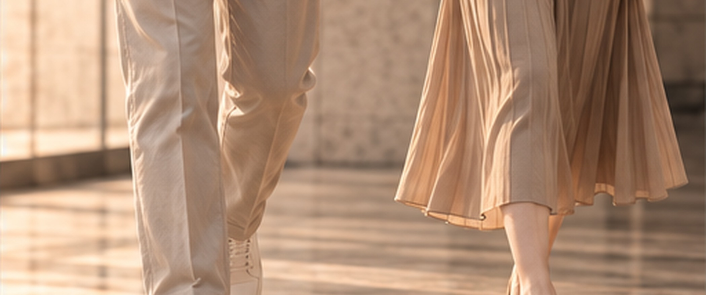
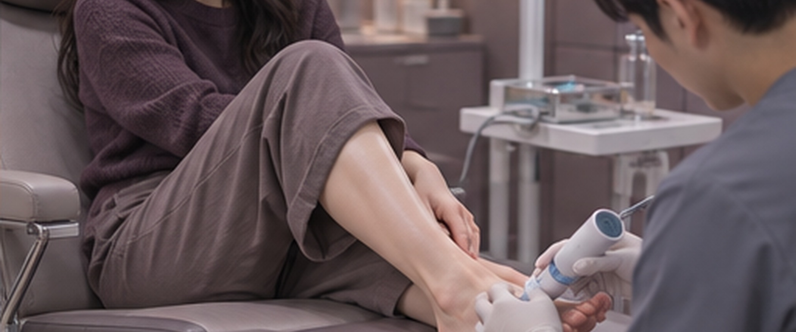
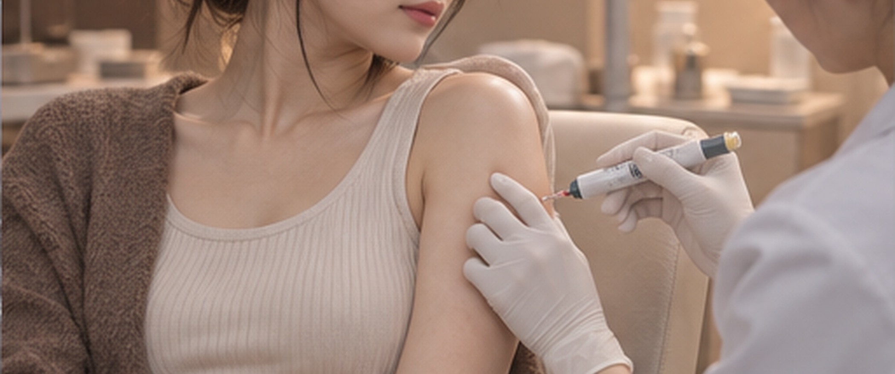

BAREUNSUP's Non-Surgical Treatment
단순히 질병 치료만이 아닌,
아픔이 시작된 원인을 찾아 바로잡겠습니다.
병을 치료하는 것에서 멈추지 않고, 통증이 어디서 시작됐는지 찾아내 그 원인을 바로잡습니다.
연골이 더 닳지 않도록 정확히 진단하고 알맞게 치료해 다시 아프지 않게 하고, 빨리 회복해서 몸이 제 기능을 되찾을 수 있도록 곁에서 돕겠습니다.
비수술 치료
관절질환을 수술 없이 치료해 통증과 움직임을 함께 돌보고,
수술하지 않고도 나을 수 있는 길을 찾겠습니다.
스포츠 손상 클리닉
스포츠 손상 클리닉
운동하다 다친 인대·근육·힘줄·연골 같은 근골격계 손상을 진단하고, 사람마다 상태에 맞춰 치료하는 클리닉입니다.
운동하다 다치는 일을 미리 막고, 다쳤다면 빨리 나아서 다시 활발하게 움직일 수 있도록 돕는 것이 목표입니다.

특징

맞춤형 치료

최소침습

복귀 지원

치료법 적용
치료방법
족부클리닉
족부클리닉
발과 발목에 생기는 모양과 기능의 문제를 진단하고, 수술하지 않는 치료로 통증을 줄이고 변형을 바로잡는 클리닉입니다.
발은 몸무게를 받치고 균형을 잡는 중요한 곳이어서, 알맞은 비수술 치료로 매일의 생활이 편해지도록 하는 데 힘을 쏟습니다.
특징
맞춤형 치료
비수술적 치료 지원
치료방법
프롤로 주사치료(인대강화주사)
프롤로 주사치료(인대강화주사)
관절이나 인대, 힘줄처럼 다친 곳에 삼투압이 높은 고농도 포도당을 바로 주사해서 약해진 조직이 다시 자라고 튼튼해지도록 돕는 비수술 치료입니다.
일부러 가벼운 염증 반응을 일으켜 몸이 스스로 다친 조직을 고치게 만들고, 조직이 단단하게 회복되도록 돕습니다.
특징

거의 없음

10 ~ 15분

당일바로

모두 가능
치료방법
체외충격파
체외충격파
높은 에너지의 충격파를 몸의 정해진 부위에 보내 다친 조직이 낫고 다시 자라도록 돕는, 수술 없는 치료입니다.
오래된 통증과 염증, 석회가 굳은 조직을 풀어 주는 데 많이 쓰며, 근골격계 질환의 통증을 줄이고 움직임을 되찾게 돕습니다.

특징

없음
10 ~ 15분
당일바로
거의 없음
치료방법
콘쥬란주사
콘쥬란주사
나이가 들어 무릎 연골이 닳으면서 아파진 분들께 잘 맞는 치료입니다. 퇴행성 관절염은 무릎 연골이 닳아서 뼈와 뼈가 바로 맞닿아 쓸리기 때문에 통증과 염증이 생깁니다.
콘쥬란 주사는 연어 같은 생선에서 얻은, 몸에 잘 맞는 폴리뉴클레오타이드(Polynucleotide)를 초음파로 보면서 무릎 관절 안에 정확히 넣는 주사입니다. 연골끼리 쓸리는 것을 줄여 주고 다친 조직의 회복과 염증을 가라앉히는 데 도움이 되는 비수술 치료입니다.
특징
10 ~ 15분
당일바로
모두 가능
치료방법
초음파 주사치료
초음파 주사치료
초음파 장비로 다친 곳을 실시간 화면으로 보면서 약을 정확한 자리에 넣는 치료입니다.
초음파를 쓰면 눈으로 보지 않고 놓는 주사보다 훨씬 정확하게 놓을 수 있고, 조직은 덜 다치게 하면서 염증을 줄이고 조직이 다시 자라도록 도울 수 있습니다.

특징
없음
5 ~ 10분
당일바로
모두 가능
치료방법
어깨와 무릎을 다시 가볍게 움직이세요!
시술 경험이 많은 의료진의 실력입니다.
수많은 시술을 해 온 바른숲병원 의료진은 환자마다 상태를 꼼꼼히 따져 보고,
그에 맞는 치료법을 골라 좋은 결과로 이어지게 합니다.
나이가 너무 많으면 시술을 못 받나요?
나이가 많다는 이유만으로 비수술 치료를 못 받는 것은 아닙니다.
비수술 치료는 전신마취 없이 치료할 곳만 간단히 마취하고 진행하기 때문에, 오히려 나이가 많거나 만성질환이 있는 분들도 비교적 안전하게 받으실 수 있는 치료입니다.
실제로 70대가 넘은 어르신들도 시술을 많이 받으시고, 심장질환이나 당뇨 같은 만성질환이 있어도 상태가 안정되어 있다면 충분히 받으실 수 있는 경우가 많습니다.
다만 시술하기 전에 환자분의 전체 건강 상태와 앓고 있는 병을 빠짐없이 살펴봐야 합니다.
그러니 나이나 지병 때문에 치료를 망설이기보다는, 전문의와 상의해서 내 몸에 맞는 치료 방법을 찾아보시는 것이 좋습니다.
무릎이 오래 아플 때 피해야 할 자세가 있나요?
무릎이 오래 아픈 분은 무릎 관절에 무게가 덜 실리고 관절을 지킬 수 있는 자세를 지키셔야 합니다.
[걸을 때]
팔자걸음이라면 걷는 법부터 바로잡으세요.
발끝이 바깥으로 벌어지지 않게, 앞을 똑바로 보도록 걸어 보세요.
팔자로 걸으면 고관절과 무릎 둘레 근육이 긴장하고, 무릎이 더 빨리 닳을 수 있습니다.
[계단 이용할 때]
계단은 되도록 덜 이용하고, 꼭 써야 한다면 무릎에 무리가 덜 가게 오르내립니다.
내려갈 때: 아픈 다리를 먼저 아래 칸에 디뎌 통증을 줄이고 무릎 관절에 실리는 무게를 덜어 줍니다.
올라갈 때: 안 아픈 다리를 먼저 위 칸에 올려 무릎이 받는 부담을 나눕니다.
내려갈 때 무릎에 무게가 더 많이 실리므로, 손잡이를 잡거나 한 칸씩 천천히 내려가시는 것이 좋습니다.
[앉을 때]
쪼그리거나 꿇어앉는 자세는 삼가 주세요.
이런 자세를 하면 무릎 관절 안의 압력이 높아져 통증이 심해지고 관절이 더 상할 수 있습니다.
의자에 앉을 때: 무릎이 90도 넘게 접히지 않게 하고, 다리를 앞으로 뻗거나 발판에 발을 올려 두면 무릎이 편합니다.
오십견은 그냥 두어도 때가 되면 낫는다는 말이 맞나요?
오십견은 시간이 가면 알아서 낫는다고 잘못 알고 치료를 차일피일 미루시는 분이 많습니다.
가벼운 경우에는 시간이 지나며 증상이 누그러지기도 하지만, 그것도 처음에 관리하고 치료를 받았을 때의 이야기입니다.
치료하지 않고 그냥 두면 통증이 더 심해지거나 어깨 관절낭의 유착이 깊어져, 팔을 들거나 돌리는 동작이 힘들어지는 운동 제한이 생기기 쉽습니다.
오래 내버려 두면 일상생활까지 크게 불편해질 수 있습니다.
오십견이 의심된다면 전문의에게 정확하게 진단받고, 물리치료나 약물치료, 도수치료처럼 알맞은 치료로 증상을 줄이고 어깨 관절 기능을 되찾는 것이 좋습니다.
하이힐을 자주 신는다면?
하이힐을 자주 신으면 발과 관절은 물론 척추 건강에도 좋지 않습니다.
하이힐을 신으면 몸무게가 발끝으로 쏠리고 발가락 관절이 지나치게 눌려 무지외반증이 생기기 쉽습니다.
발목과 무릎 관절에도 무리가 가서 관절염이나 힘줄 손상이 생기거나 더 나빠질 수 있습니다.
몸의 무게중심이 앞으로 쏠리면서 척추가 받는 짐도 커져 허리가 아프거나 자세가 틀어지기도 쉽습니다.
오래 걷거나 서 있어야 하는 날에는 발을 조이지 않는 편한 신발을 고르시는 것이 좋습니다.
하이힐을 꼭 신어야 한다면 굽이 낮은 것으로 고르고, 2시간 넘게 계속 신지 않도록 하세요.
손저림, 원인은 무엇인가요?
손저림은 손을 오래 쓰거나 신경이 눌려서 생기는 일이 대부분입니다.
흔히 피가 잘 안 돌아서라고 여기거나 중년이 넘으면 뇌졸중을 걱정하시기도 하지만, 실제로 손저림이 혈액순환 장애나 뇌졸중 때문인 경우는 많지 않습니다.
손이 저린 흔한 원인은 아래와 같습니다:
손목터널증후군: 손목 안쪽에서 정중신경이 눌려 엄지·검지·중지가 저리고 아파지는 질환
팔꿈치터널증후군: 팔꿈치 쪽에서 척골신경이 눌려 새끼손가락과 넷째 손가락이 저린 질환
목디스크: 목뼈에서 신경이 눌려 팔과 손으로 저림과 통증이 뻗치는 질환
기타 원인: 당뇨병으로 생긴 신경병증이나 말초신경염, 류마티스 관절염처럼 다른 병이 원인일 때도 있습니다
증상이 계속되거나 심해진다면 전문의에게 정확히 진단받고 치료를 시작하시는 것이 가장 좋습니다.
손저림은 원인마다 치료법이 다르니 그냥 두지 마시고 알맞은 관리를 시작해 보세요.
아픈 곳을 두드리면 뭉친 근육이 풀릴까요?
아픈 곳을 두드리면 잠깐은 시원하게 느껴질 수 있지만, 뭉친 근육을 제대로 풀어 주는 방법은 아닙니다.
두드리는 자극이 신경을 건드려 덜 아픈 것처럼 느끼게 만들 뿐, 근육이 실제로 풀리는 것은 아니기 때문입니다.
통증이 계속되거나 심하다면 전문의와 상의해 정밀하게 진단받고 알맞은 치료를 받으시는 것이 좋습니다.
체외충격파는 몇 회쯤 치료받으면 나아지는 게 느껴지나요?
체외충격파치료의 효과는 증상과 병의 정도에 따라 다르지만, 대개 3~5번쯤 치료를 받고 나면 나아졌다고 느끼시는 분이 많습니다.
3~5번 치료를 받은 뒤에도 계속 아프거나 증상이 더 심해진다면, 전문의와 상의해서 정밀하게 진단받고 그에 맞는 치료를 받으시는 것이 좋습니다.
퇴행성 관절염을 비수술 치료만으로 완전히 고칠 수 있나요?
퇴행성 관절염은 관절 연골이 닳고 약해지는 퇴행성 질환이라, 완전히 낫게 한다기보다는 증상을 줄이고 더 나빠지는 속도를 늦추는 것을 목표로 치료합니다.
관절염이 처음이거나 중간 단계일 때 비수술 치료를 받으면 통증이 줄고 관절이 더 잘 움직이게 되어, 일상생활을 한결 편하게 이어 가실 수 있습니다.
프롤로 주사나 체외충격파 치료 같은 비수술 치료는 관절의 염증을 줄이고 관절을 매끄럽게 해 주어 병이 진행되는 속도를 늦추는 데 도움이 됩니다.
하지만 관절이 많이 상한 경우에는 비수술 치료만으로 부족할 수 있으니, 전문의에게 진단을 받아 어떤 치료를 할지 정하시는 것이 좋습니다.
초음파를 보며 놓는 주사는 일반 주사와 무엇이 다른가요?
초음파 주사치료는 초음파 장비로 주사 놓을 자리를 실시간 화면으로 보면서 약을 정확한 곳에 넣는 치료입니다.
그래서 초음파 주사치료는 일반 주사치료보다 더 정확하고 안전하며, 관절이나 힘줄이 다쳤거나 염증이 생긴 질환을 치료할 때 특히 더 잘 듣습니다.
관절이 많이 아플 때 바로 병원에 가야 하나요, 조금 지켜봐도 되나요?
통증이 아주 심하거나 붓고 빨개질 때, 관절이 잘 움직이지 않거나 체중을 싣지 못할 정도라면 곧바로 병원에 오셔야 합니다.
관절염이나 연골·인대 손상처럼 심각한 상태일 수 있으므로 서둘러 진단받고 치료를 시작해야 합니다.
통증이 일주일 넘게 이어지거나 점점 심해진다면 꼭 전문의를 찾아가 정밀하게 진단받고 그에 맞는 치료를 받으셔야 합니다.
관절 통증을 그냥 두면 상태가 나빠져 오래가는 문제로 이어질 수 있으니 처음에 잘 대처하는 것이 중요합니다.
운동하다 다친 뒤 바로 얼음찜질을 해야 하나요? 찜질은 언제 하면 좋을까요?
다친 직후에는 얼음찜질을 하고, 붓기와 염증이 가라앉은 다음에 온찜질로 바꾸는 것이 회복에 가장 도움이 됩니다.
얼음찜질(냉찜질): 다친 곳의 붓기와 염증을 줄이고 통증을 덜기 위해 다치고 나서 48시간 안에 해야 합니다.
얼음을 천으로 싸거나 아이스팩을 써서 하루 3~4번, 한 번에 15~20분쯤 대 주시면 알맞습니다.
온찜질: 다친 곳의 염증이 가라앉은 뒤, 굳은 근육을 풀어 주거나 피가 잘 돌게 할 필요가 있을 때 씁니다.
보통 손상 후 48시간이 지난 후에 적용하는 것이 좋습니다.
* 주의사항
얼음찜질은 얼음을 수건이나 천에 싸서 피부에 직접 대지 않도록 하세요.
염증이 한창 심한 초기(급성기)에는 온찜질을 하면 오히려 해로우니 조심하셔야 합니다.
족저근막염이 있을 때 걷기 운동을 해도 되나요, 쉬는 게 나을까요?
족저근막염이 있을 때 걷기 운동은 얼마나 아픈지, 상태가 어떤지에 맞춰 알맞게 조절하셔야 합니다.
아픔이 심한 처음 며칠은 발바닥 근막에 무리가 가지 않도록 오래 걷는 것을 피하고 쉬어 주세요.
이 시기에는 충분히 쉬면서 얼음찜질과 스트레칭을 하고 알맞은 신발을 신는 등 다른 치료를 함께 해 염증과 통증을 가라앉혀야 합니다.
통증이 줄어드는 회복기에는 무리가 되지 않을 만큼 걷기 운동을 다시 시작하셔도 됩니다.
푹신한 신발을 신고, 평평하고 단단한 바닥에서 천천히 걸으시는 것이 좋습니다.
운동 전과 후에는 족저근막과 종아리 근육을 늘려 주는 스트레칭으로 근막을 부드럽게 풀어 주셔야 하고,
걷는 도중에 아프기 시작하면 바로 운동을 멈추고 충분히 쉬셔야 합니다.
통증이 계속되거나 더 나빠진다면 전문의를 찾아가 정확히 진단받고 치료 방법을 함께 상의하시는 것이 좋습니다.
족저근막염은 상태에 맞춰 관리하는 것이 먼저이고, 무리하게 운동하면 증상이 더 심해질 수 있으니 조심스럽게 해 나가셔야 합니다.
비수술 치료 뒤 관리를 소홀히 하면 증상이 되돌아오나요?
비수술 치료로 좋아졌더라도 뒷관리를 소홀히 하면 다시 아파질 수 있습니다.
비수술 치료는 통증을 줄이고 조직이 낫도록 도우며 관절이 더 잘 움직이게 하는 데 효과가 있지만,
치료 뒤에 생활 습관을 바로잡고 알맞게 관리하지 않으면 다시 아플 가능성이 커집니다.
예를 들어 몸을 지나치게 쓰거나 무리하게 운동하고 바르지 않은 자세를 되풀이하면, 치료로 좋아진 곳에 다시 부담이 가서 증상이 돌아올 수 있습니다.
비수술 치료를 받은 뒤에도 재활 운동과 스트레칭을 꾸준히 해서 관절과 근육을 튼튼하게 하고 부드러움을 지켜 주셔야 합니다.
그래서 치료 뒤에는 전문의가 알려 드리는 대로 무리가 되지 않는 선에서 생활하시고, 관절에 부담이 가는 활동은 피하시는 것이 좋습니다.
다시 아프지 않도록 정기적으로 검진받고 꾸준히 관리하는 것도 꼭 필요합니다.